Floresta

Descubra um universo virtual repleto de possibilidades e desafios! Com o Minecraft, você pode criar o seu próprio mundo, desde construções simples até grandes obras arquitetônicas, explorar cavernas misteriosas, enfrentar monstros aterrorizantes e interagir com outros jogadores de todo o mundo.
Minecraft é um jogo eletrônico de sandbox que permite aos jogadores construírem e explorarem mundos virtuais tridimensionais. O jogo foi desenvolvido e publicado pela Mojang Studios em 2011 e, desde então, se tornou um dos jogos mais populares de todos os tempos, com mais de 200 milhões de cópias vendidas em todo o mundo.
Os jogadores podem construir estruturas e objetos usando uma variedade de blocos de diferentes materiais, como madeira, pedra, tijolo e até mesmo obsidiana. Eles também podem interagir com o ambiente, como cortar árvores, minerar recursos, cultivar plantas e até mesmo criar animais.

Os biomas são as diferentes regiões do mundo do jogo, cada uma com características únicas de terreno, clima e recursos. Existem mais de 30 biomas diferentes no Minecraft, desde as florestas densas até as regiões geladas e montanhosas.


Os biomas são uma parte fundamental do mundo do Minecraft e são importantes para a jogabilidade. Os jogadores precisam entender os diferentes biomas para encontrar os recursos que precisam e sobreviver aos desafios que enfrentam. Alguns jogadores preferem jogar em biomas específicos, enquanto outros gostam de explorar e descobrir novos biomas.
O jogador se depara com diferentes tipos de criaturas, conhecidas como mobs. Essas criaturas aparecem em vários biomas do jogo e podem ser amigáveis ou hostis, dependendo da espécie.
Mobs são listados e classificados por sua natureza da perspectiva do jogador. Para mais detalhes sobre um mob em particular, clique neles para ver sua página individual.
Mobs passivos são mobs inofensivos (exceto baiacu) que não tentam atacar o jogador, mesmo quando provocados ou atacados. A maioria deles pode ser criada ou domesticada.
| 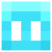 |

|
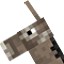 |

|

|
|||||
| Acalmar | Axolote | Morcego | Gato | Frango | Bacalhau | Vaca | Burro | Raposa | Sapo |

|

|
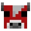 |

|

|

|

|
|||
| Lula brilhante | Cavalo | Mooshroom | Mula | Jaquatirirca | Papagaio | Porco | Baiacu | Coelho | Salmão |
| 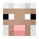 |

|

|

|
||||||
| Ovelha | Cavalo esqueleto | Golem de neve | Lula | Passolargo | Girino | Peixe tropical | Tartaruga | Aldeão | Comerciante |
Mobs neutros às vezes são passivos e às vezes hostis ao jogador. Todos esses mobs (exceto cabras) são provocados quando o jogador os ataca primeiro. Alguns mobs também podem ser naturalmente hostis com provocação, e alguns mobs também têm alguma forma adicional de serem provocados.

|

|

|

|

|

|
|
| Abelha | Aranha da caverna | Golfinho | Enderman | Cabra | Golem de ferro | Lhama |
| 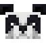 | 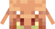 |

|

|
|||
| Panda | Piglin | Urso polar | Aranha | Lhama comerciante | Lobo | Piglin zumbificado |
Mobs hostis são mobs perigosos e agressivos que sempre atacam o jogador dentro de seus respectivos intervalos de detecção. Alguns mobs passivos, como galinhas e cavalos esqueletos, podem ser hostis se forem montados por um mob hostil em raras ocasiões.

|

|
||||||||
| Blaze | Frango Jockey | Creeper | Afogado | Ancião guardião | Endermite | Envocador | Ghast | Guardião | Hoglin |

|

|
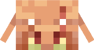 |

|
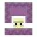 | |||||
| Husk | Cubo de magma | Phantom | Piglin bruto | Saqueador | Devastador | Shulker | Silverfish | Esqueleto | Cavaleiro esqueleto |

|

|
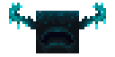 |

|

|
||||||
| Slime | Aranha jockey | Stray | Vex | Vindicante | Warden | Bruxa | Wither esqueleto | Zoglin | Zumbi | Aldeão zumbi |
Boss mobs são mobs hostis especiais que são distintamente mais perigosos e mais difíceis do que outros mobs. Eles não aparecem aleatoriamente e são confrontados intencionalmente. Todos eles também têm uma barra de chefe com seu nome e saúde. Boss mobs oferecem desafios únicos, mas também recompensas equivalentes.

|

|
| Dragão do fim | Wither |
O Minecraft é um jogo de sobrevivência que oferece uma experiência única de mundo aberto. Quando o jogador começa o jogo, é essencial criar um abrigo e obter os recursos necessários para sobreviver. Aqui estão algumas dicas para começar:
| Nome | Descrição |
|---|---|
| Usadas para construir as paredes, chão e teto do abrigo | |
| Usada como entrada para o abrigo | |
| Usada para iluminar o ambiente | |
| Usada para cercar o abrigo e evitar que monstros entrem | |
| Usada para subir ou descer níveis | |
| Usado para janelas e para permitir a entrada de luz natural | |
| Usada para dormir e avançar a hora do dia |
Lembre-se de que esses são apenas alguns dos blocos e ferramentas que você pode usar para construir um abrigo no Minecraft. Há muitas outras opções e variações para personalizar seu abrigo.
| Nome | Descrição |
|---|---|
| Usada para quebrar pedra, minérios e coletar blocos mais rapidamente | |
| Usado para coletar blocos de madeira. | |
| Usada para cavar terra, areia, cascalho, neve e argila mais rapidamente | |
| Usada para combater monstros e outros jogadores | |
| Usada para preparar a terra para plantio de sementes e cultivo de plantas | |
| Usada para atirar flechas e combater monstros a distância | |
| Usada para pescar peixes e outros itens úteis na água |
Além dessas ferramentas, é importante ter um bom suprimento de alimentos e tochas para sobreviver no mundo do Minecraft. A partir dessas ferramentas básicas, você pode expandir sua coleção de ferramentas e recursos à medida que avança no jogo.
Skins no Minecraft são a aparência do personagem do jogador, que pode ser personalizada de várias maneiras. É possível mudar a cor da pele, o estilo do cabelo, a roupa e até mesmo adicionar acessórios. As skins podem ser baixadas de diversos sites na internet ou criadas pelo próprio jogador.
Existem skins gratuitas e outras pagas, que podem ser adquiridas através da loja oficial do Minecraft ou de outros sites de terceiros. Muitos jogadores usam skins para se destacar no jogo ou simplesmente para se divertir.
Algumas das skins mais populares no Minecraft:

Em resumo, as skins são uma maneira divertida e criativa de personalizar o seu personagem no Minecraft e se destacar entre outros jogadores. Com uma grande variedade de skins disponíveis, é possível encontrar uma que se adapte perfeitamente ao seu estilo ou criar sua própria skin personalizada para adicionar uma camada extra de personalidade ao seu jogo.
O jogo é conhecido por sua jogabilidade única, onde os jogadores podem escolher jogar no modo de sobrevivência, onde enfrentam monstros e coletam recursos para sobreviver, ou no modo criativo, onde têm acesso a todos os recursos do jogo e podem construir livremente. O Minecraft é um jogo incrível que oferece inúmeras possibilidades para os jogadores explorarem e criarem em seu próprio mundo virtual.


 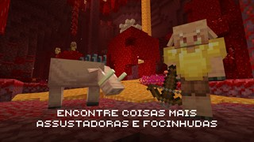
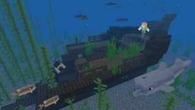
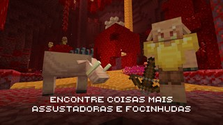
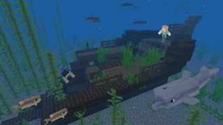
Minecraft é um jogo de sandbox onde os jogadores podem construir e explorar mundos virtuais.
Minecraft está disponível em diversas plataformas, incluindo PC, Mac, Xbox, PlayStation, Nintendo Switch, iOS e Android.
O objetivo do Minecraft é sobreviver e prosperar em um mundo gerado aleatoriamente, construindo estruturas e explorando os recursos disponíveis.
Mods são modificações criadas pelos jogadores que alteram o jogo de alguma forma, adicionando novos itens, mecânicas ou funcionalidades.
Não, o Minecraft não é um jogo gratuito. É necessário comprar uma licença para jogar a versão completa do jogo.
Existem várias maneiras de jogar com amigos em Minecraft. Você pode se conectar a um servidor público ou criar seu próprio servidor. Você também pode jogar em uma LAN (rede local) ou usar o Realms, o serviço de hospedagem oficial da Mojang.
Você pode baixar o Minecraft em dispositivos móveis da App Store (para usuários de iOS) ou da Google Play Store (para usuários de Android). Você também pode jogar Minecraft em dispositivos Windows 10 usando a versão Bedrock do jogo.
Você pode entrar em contato com a equipe de suporte do Minecraft através do site oficial, enviando um email ou criando um ticket de suporte.
Se você está em busca de informações sobre Minecraft ou precisa de ajuda para resolver algum problema relacionado ao jogo, nossa equipe de suporte estará pronta para ajudá-lo. Além disso, se você tiver alguma sugestão para melhorar nosso site, teremos o maior prazer em ouvi-lo e, se possível, implementar suas ideias.